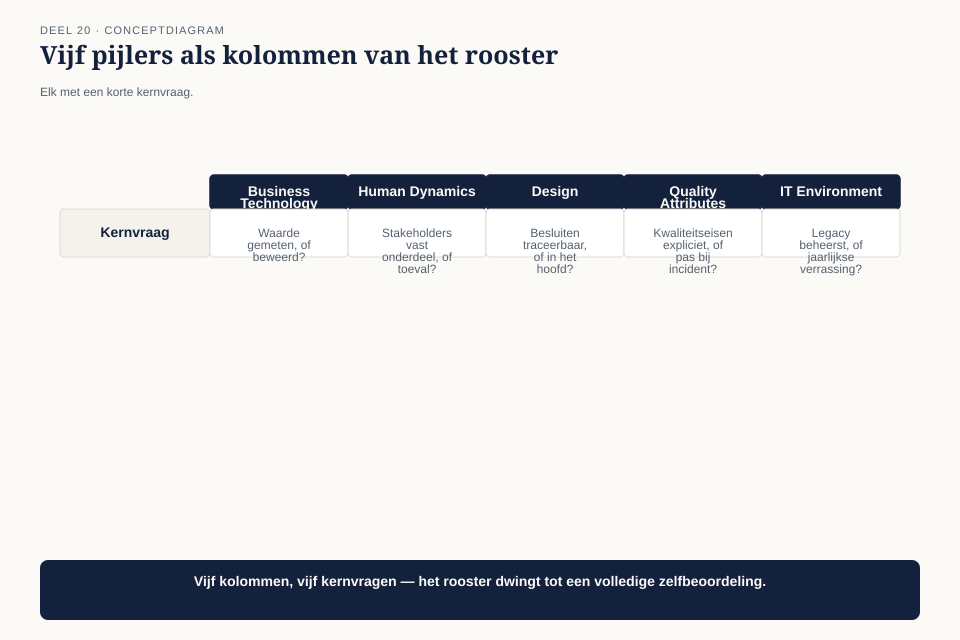
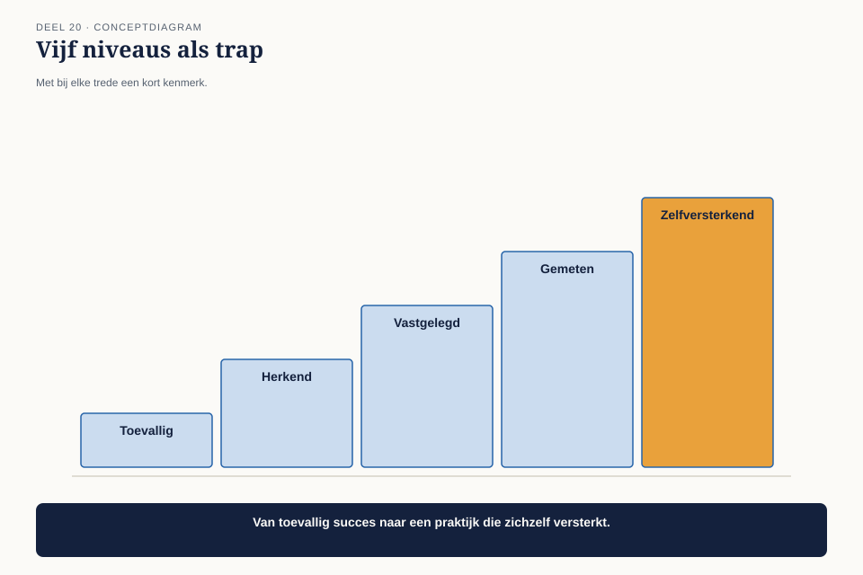
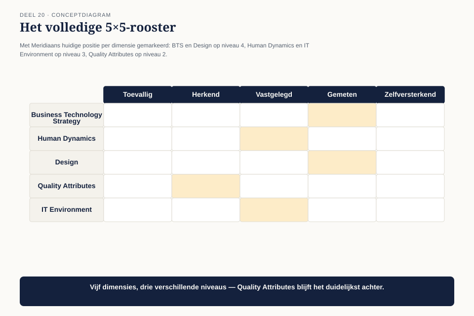
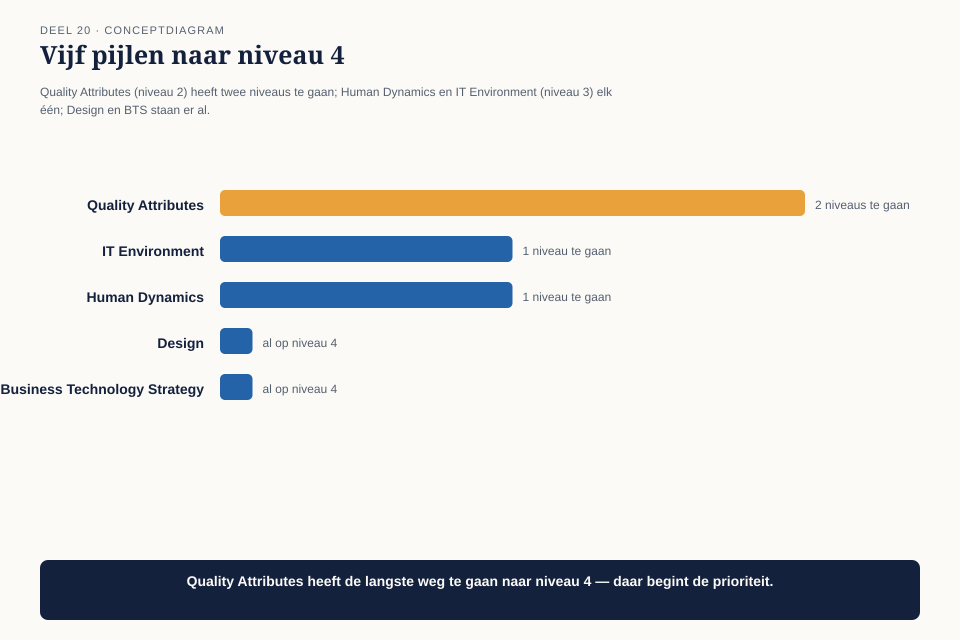

Deel 20 — Architectuurvolwassenheid
Slidedeck · Ductus-cursus BTABoK · Niveau 2 · deel 20 van 30 · 25 slides
Slide 1 — Titel: Architectuurvolwassenheid
Deel 20 — los aanbiedbaar
Ductus
Slide 2 — Agenda: Vandaag
- De vraag van het bestuur
- Vijf dimensies
- Vijf niveaus
- Het rooster ingevuld
- Waar de volgende investering het meeste oplevert
Slide 3 — Sectie: 1. De vraag van het bestuur
Slide 4 — Citaat: Hoe volwassen is deze praktijk eigenlijk, en waar zitten de zwakke plekken?
Hoe volwassen is deze praktijk eigenlijk, en waar zitten de zwakke plekken?
— het bestuur
Slide 5 — Statement: Intuïtief weten waar het zwak is
Geen gedeeld, herhaalbaar instrument om het te onderbouwen
Slide 6 — Sectie: 2. Vijf dimensies
Slide 7 — Figuur: De vijf pijlers, hergebruikt

Slide 8 — Tabel: Kernvraag per dimensie
| Dimensie | Vraag |
|---|---|
| BTS | Waarde structureel gemeten, of beweerd? |
| Human Dynamics | Vast onderdeel, of toeval? |
| Design | Traceerbaar, of in iemands hoofd? |
| IT Environment | Beheerst, of jaarlijkse verrassing? |
| Quality Attributes | Expliciet, of pas bij een incident? |
Slide 9 — Sectie: 3. Vijf niveaus
Slide 10 — Figuur: De trap

Slide 11 — Tabel: De ladder
| # | Niveau |
|---|---|
| 1 | Toevallig |
| 2 | Herkend |
| 3 | Vastgelegd |
| 4 | Gemeten |
| 5 | Zelfversterkend |
Slide 12 — Statement: De sprong van 3 naar 4 is de moeilijkste
Een instrument bestaat — wordt het ook gebruikt?
Slide 13 — Opdracht: Opdracht 1 — Het rooster invullen
30 minuten, individueel
Eigen organisatie · vijf dimensies, vijf niveaus
Slide 14 — Sectie: 4. Het rooster ingevuld
Slide 15 — Figuur: Meridiaan

Slide 16 — Tabel: De uitkomst
| Dimensie | Niveau |
|---|---|
| BTS | 4 — Gemeten |
| Human Dynamics | 3 — Vastgelegd |
| Design | 4 — Gemeten |
| IT Environment | 3 — Vastgelegd |
| Quality Attributes | 2 — Herkend |
Slide 17 — Statement: Niet overal even volwassen
En dat is normaal
Slide 18 — Opdracht: Opdracht 2 — De sprong van 3 naar 4
20 minuten, tweetallen
Wat zou het concreet vergen? Wie, hoe vaak?
Slide 19 — Sectie: 5. Gerichte investering
Slide 20 — Figuur: Vijf pijlen, verschillende lengte

Slide 21 — Statement: Geen wedstrijd om niveau 5 op alles
Waar levert de volgende stap het meeste op?
Slide 22 — Opdracht: Opdracht 3 — De gerichte investering
15 minuten, individueel
Welke dimensie? Wat doe je bewust NIET?
Slide 23 — Bullets: Het antwoord aan het bestuur
- Geen rapportcijfer — een investeringsvoorstel
- Quality Attributes: niveau 2 → 3, binnen 2 kwartalen
- Zelfde logica als een pensioenfonds dat gericht investeert waar het tekort het grootst is
Slide 24 — Opdracht: Opdracht 4 — Het antwoord aan het bestuur
25 minuten, groepen van 3-4
Dimensie · beoogd niveau · termijn
Slide 25 — Titel: Volgende keer
Deel 21 — Specialisatiekeuze
De vier andere specialisaties naast Solution.